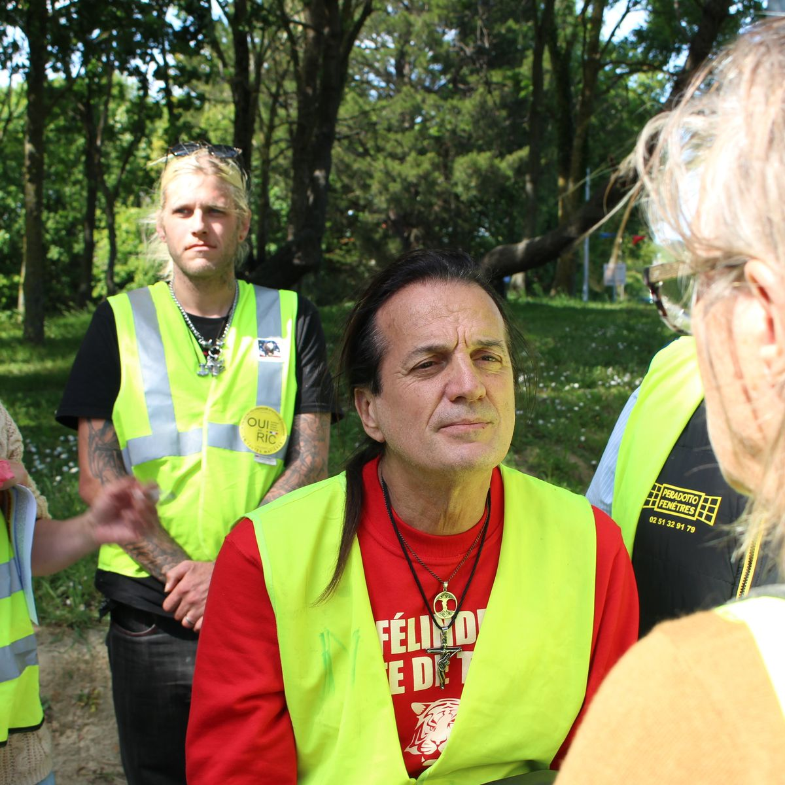

"Je vis sur la route, mais sans concert au bout" : on a passé une journée avec Francis Lalanne, tête de liste "gilets jaunes" aux européennes
Le chanteur et candidat aux élections européennes poursuit sa campagne auprès des citoyens à travers la France.

Francis Lalanne poursuit sa tournée électorale dans plusieurs villes françaises afin de rencontrer les citoyens et présenter les propositions de sa liste pour les élections européennes.
Au cours de cette journée de campagne, le candidat a multiplié les échanges avec les habitants et les sympathisants présents lors des différents rassemblements organisés dans la région.
L'artiste affirme vouloir défendre davantage la participation citoyenne et encourager une représentation plus directe des préoccupations exprimées par les électeurs.
Une campagne au plus près du terrain
Selon son entourage, cette approche permet de maintenir un contact permanent avec la population et de mieux comprendre les attentes des électeurs à quelques jours du scrutin.
Les échanges ont porté sur plusieurs sujets majeurs comme le pouvoir d'achat, les institutions européennes, la fiscalité et les services publics.
Malgré les difficultés rencontrées par les petites listes pour obtenir une visibilité nationale, Francis Lalanne continue de défendre son projet politique et de parcourir le pays à la rencontre des citoyens.